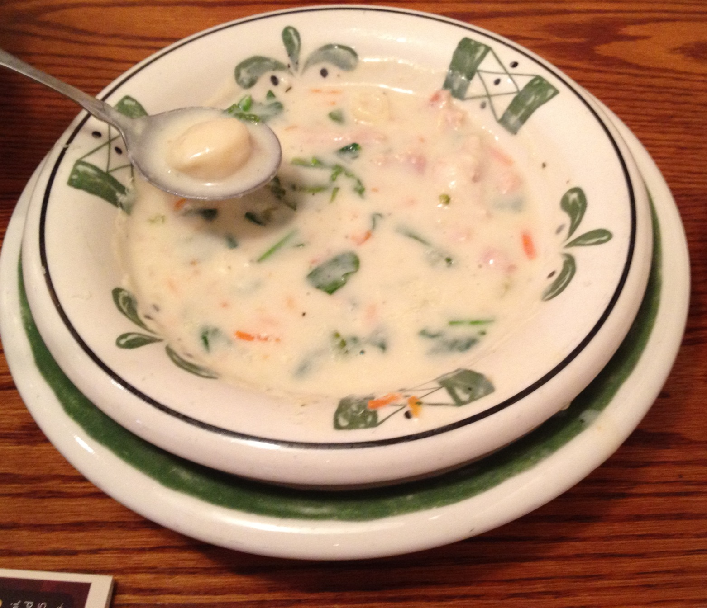

Home
Chicken Gnocchi Soup

Description
My partners mimic of the Chicken Gnocchi soup served at Olive Garden.
Ingredients
- 1 Package of Gnocchi
- 3 handfuls of Baby Spinach
- Salt
- Pepper
- 1/4 tsp Ground Thyme
- Olive Oil
- 3 Chicken Breasts
- 1/2 of a Diced White Onion
- 2 Stalks of Celery
- 2 Carrots Diced
- 1 1/2 cup heavy cream
- 3 Cups Chicken Broth
Directions
- Cook Chicken seasoned with salt and pepper
- Dice chicken into bite size pieces
- Dice Vegetables
- In a large bot add 2 tbsp olive oil
- On medium heat add veggies and saute till onions are translucent
- Add chicken and broth
- Bring to boil over high heat
- Boil for 10 minutes or until Carrots and Celery are tender
- Add pepper, salt, and thyme
- Add gnocchi
- Stir on medium heat, simmer for 5-6 minutes or until tender
- Add heavy cream and spinach
- Cook for another 2-3 minutes
- Serve